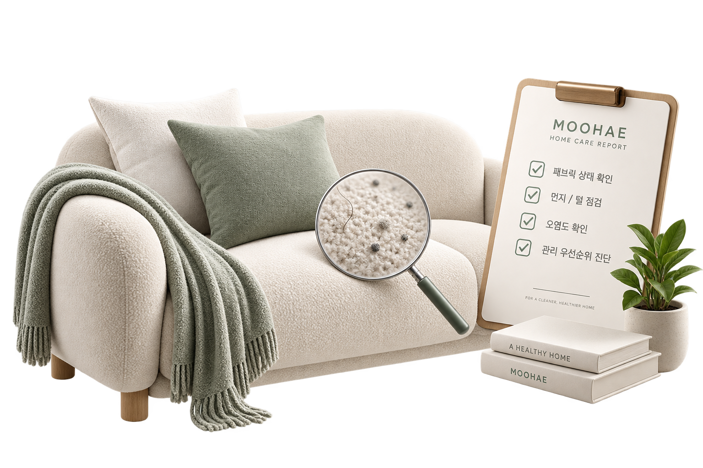
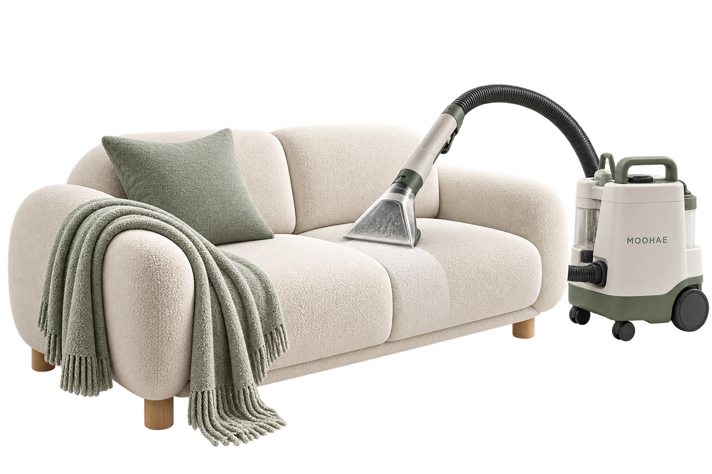
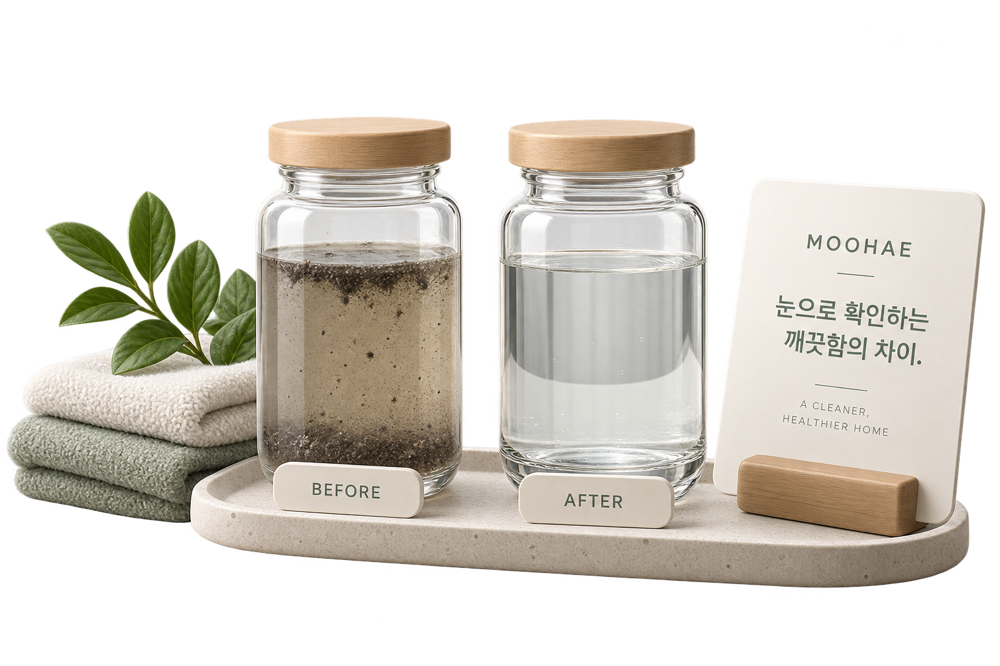
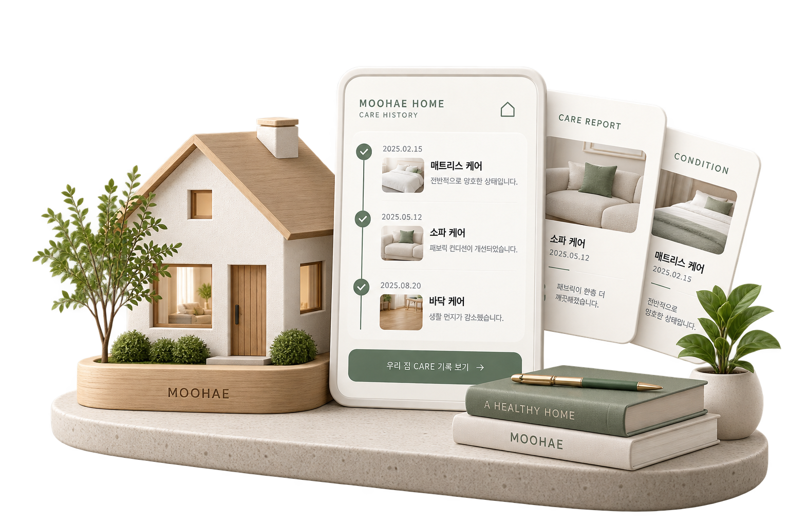
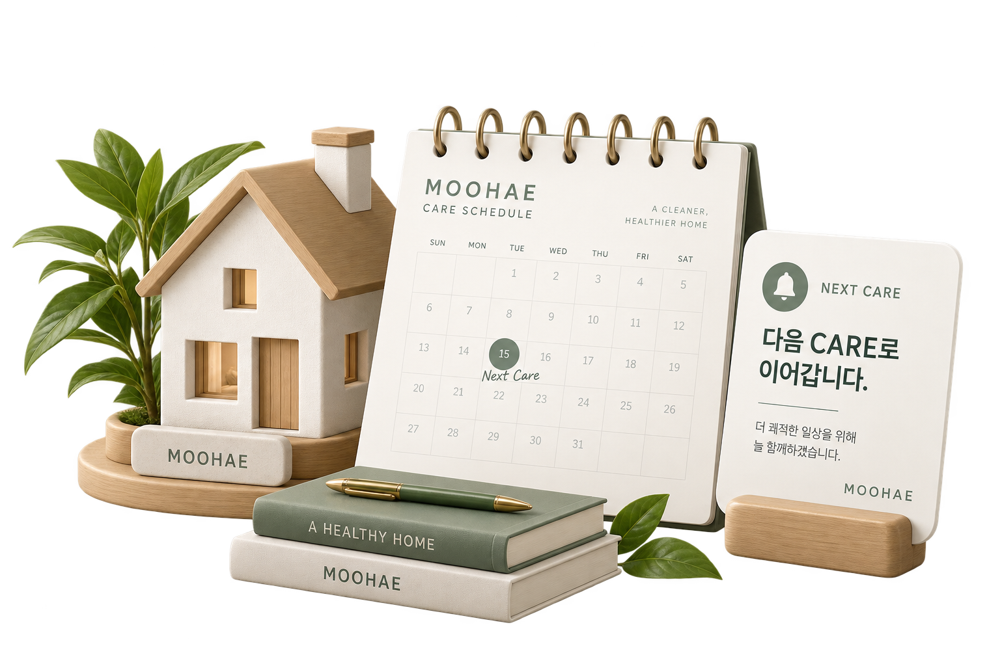

01 CHECK
먼저,
확인합니다.
무엇이 필요한지부터 확인합니다.

MOOHAE CARE
우리 집에 맞는 CARE를 찾아보세요.
LIVING ENVIRONMENT
MOOHAE CARE FLOW
관리하고 끝내지 않습니다.
01 CHECK
무엇이 필요한지부터 확인합니다.

02 CARE
확인한 상태에 맞춰 필요한 CARE만.

03 PROOF
CARE 결과를 눈으로 확인할 수 있도록.

04 HISTORY
우리 집의 이전 CARE가 다음 판단으로.

05 NEXT
필요한 시점을 기억하고 다음 CARE까지 연결합니다.

PROOF
MOOHAE CARE PLAN
MOOHAE ONE
MY HOME
한 번의 CARE가
다음 CARE로 이어집니다.
침실
거실